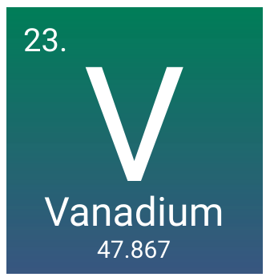

About
Vanadium is a chemical element with the symbol V and atomic number 23. It is a hard, silvery-grey, malleable transition metal. The elemental metal is rarely found in nature, but once isolated artificially, the formation of an oxide layer somewhat stabilizes the free metal against further oxidation.Wikipedia

Image

Image link-https://farm7.static.flickr.com/6145/6010512363_d88332c07e_b.jpg
Symbol- V
Atomic mass- 50.9415 u
Atomic number- 23
Discovered- 1830
Discovered by- Nils Gabriel Sefström
Electrons per shell- 2, 8, 11, 2
Oxidation states- −3, −1, 0, +1, +2, +3, +4, +5 (an amphoteric oxide)
Group- group 5
Appearance - blue-silver-grey metal
Van der Waals radius - NA